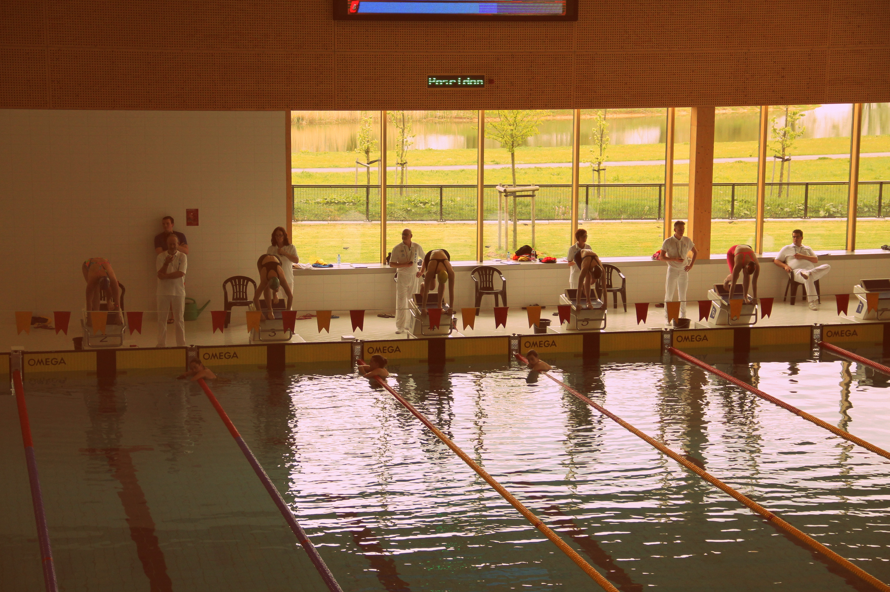

The Sharks of Maastricht
We spoke to Jeroen van Brakel, the president of M.S.Z.V Tiburón on the 30th of May at the
Geusseltbad swimming complex. Incase you have not heard about Tiburón, they are a swimming association based in Maastricht. They first focused on targeting competitive swimmers but now they welcome any kind of swimmer into the association. They focus on improving swimmers overall strokes, time and rhythm.
Every two years Tiburón hosts a big swimming competition, on this particular day Tiburón
welcomes 11 teams and 329 swimmers from all across The Netherlands from big cities such as Delft, Amsterdam and Eindhoven to compete against. The level of swimming is not that extreme so that there is still a fun component to the races. Jeroen jokes that the best swimmer is the one who can drink the most on Friday and swim the best the next day (hahahaha).
Tiburón members also branch out their hospitality by hosting members of other swimming
associations at their place, which allows the members to connect with people all across the
country. Jeroen mentions his favourite thing about swimming: ‘’The bond between swimmers, you swim individually but the bond between friends is strong, you party together and swim together - thats Tiburón’’. Another member, Kate of Tiburón has a different opinion on what she loves about swimming ‘’I love the adrenaline when you swim as well as when you beat someone else, its a great feeling’’

Over the year several competitions occur across the country. The last one of the year will be in Enschede on the 3rd-5th of June. Every year each association accumulates their final points and the ones who swim the fastest wins the whole thing.
 Tiburón is not all work no play. This upcoming Friday (13th May) to celebrate their 15th anniversary the association will hold a Lustrum event with the theme ‘’Around the World’’. Leading up to the event there are the ‘’The Lustrum Games’’ where every member receives a passport and have to participate in different games and activities. Every activity allocates a certain number of stamps and the one who has the most wins the games. For example a stamp would be allocated for taking a selfie wearing a Tiburón t-shirt outside the station, or for swimming outside the normal training hours.
Every member in Tiburón tries to get these Lustrum points to become the winner of the Lustrum games. The event focuses on swimmers and friends of swimmers but all are welcome to come along.
If interested in getting involved with Tiburón swimming association drop by the Geusseltbad every Tuesday and Thursday 19:15 and 20:45 respectively.
Tiburón is not all work no play. This upcoming Friday (13th May) to celebrate their 15th anniversary the association will hold a Lustrum event with the theme ‘’Around the World’’. Leading up to the event there are the ‘’The Lustrum Games’’ where every member receives a passport and have to participate in different games and activities. Every activity allocates a certain number of stamps and the one who has the most wins the games. For example a stamp would be allocated for taking a selfie wearing a Tiburón t-shirt outside the station, or for swimming outside the normal training hours.
Every member in Tiburón tries to get these Lustrum points to become the winner of the Lustrum games. The event focuses on swimmers and friends of swimmers but all are welcome to come along.
If interested in getting involved with Tiburón swimming association drop by the Geusseltbad every Tuesday and Thursday 19:15 and 20:45 respectively.
 For more information about Tiburón visit http://mszvtiburon.nl/
For more information about Tiburón visit http://mszvtiburon.nl/